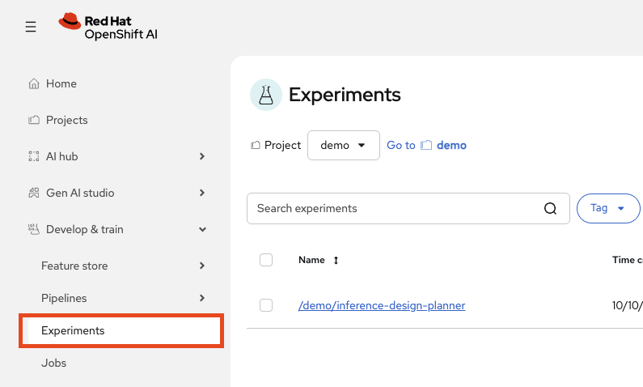
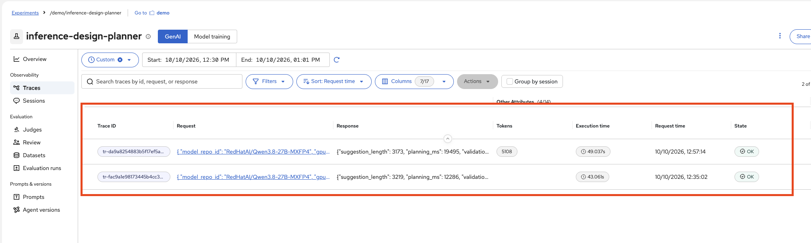
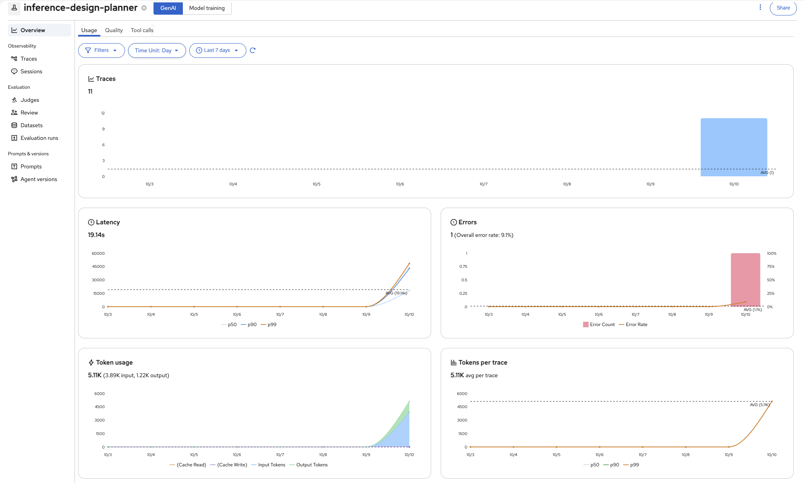
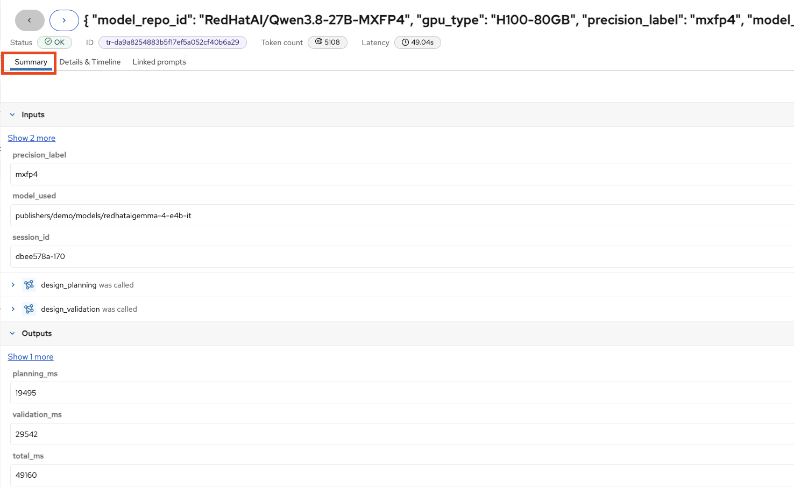
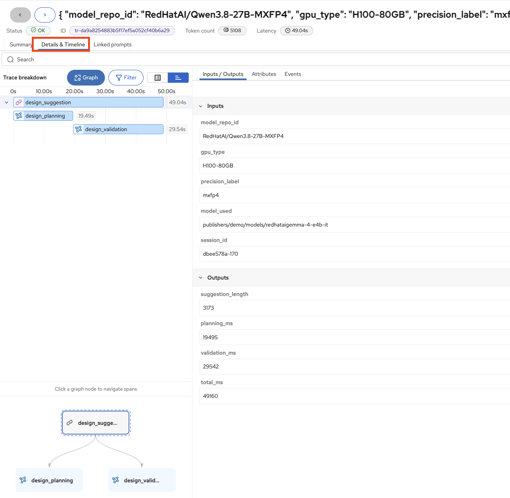
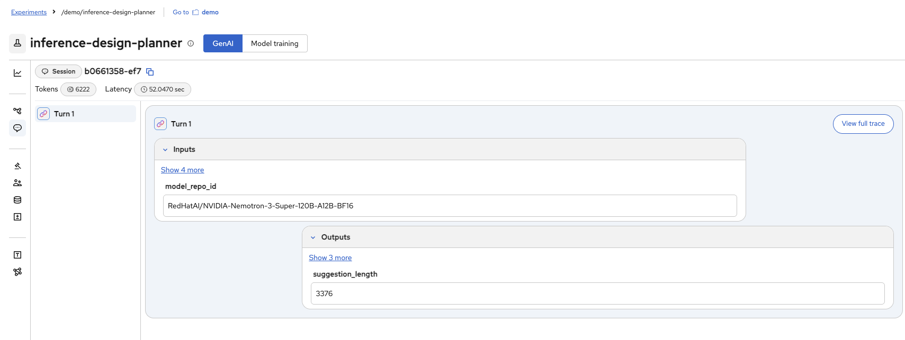

Tracing with MLflow
Logs tell you what happened, but traces tell you why. In this module you will explore MLflow tracing to gain end-to-end visibility into the Inference Design Planner application. You will trace requests across LLM calls and tool invocations, inspect execution timelines, and understand how MLflow captures inputs, outputs, and latency for every step.
Learning Objectives
By the end of this module you will be able to:
-
Navigate the MLflow UI to find and analyse request traces
-
Understand how autologging captures traces with zero code changes
-
Analyse execution timelines, tool calls, and LLM invocations
-
Inspect individual spans for inputs, outputs, token counts, and latency
-
Explore user sessions and multi-turn conversations
What is MLflow Tracing?
MLflow Tracing is an OpenTelemetry-compatible LLM observability solution that captures inputs, outputs, and metadata for each step of a request. For the Inference Design Planner, this means visibility into:
-
The complete path of each user request
-
Every LLM call with its prompt and response
-
All tool invocations with their inputs and outputs
-
Timing breakdowns for each operation
Each request creates a trace (the complete request flow) composed of spans (individual operations) organised in a parent-child tree showing what called what.
How Autologging Works
MLflow integrates with 40+ popular LLM and AI agent frameworks, offering a one-line automatic tracing experience. The Inference Design Planner uses LangChain autologging. The entire tracing setup is:
import mlflow
import mlflow.langchain
mlflow.set_tracking_uri(settings.MLFLOW_TRACKING_URI)
mlflow.set_experiment(settings.MLFLOW_EXPERIMENT_NAME)
mlflow.langchain.autolog() (1)| 1 | This single line enables automatic tracing for all LangChain and LangGraph operations. Every LLM call, tool invocation, and agent decision is captured as spans without any code changes to the application logic. |
MLflow’s autologging provides:
-
Zero code changes for basic observability — autolog hooks into the framework at the library level
-
Rich metadata including inputs, outputs, token counts, model names, and latency
-
Production-ready scaling — traces are sent asynchronously to avoid blocking the application
|
When Autologging Isn’t Enough
To group related calls into a single trace with child spans, add manual instrumentation using Key points:
For more details, see the MLflow documentation: Manual Tracing | Token Usage | LangChain Integration |
Exercise 1: Access MLflow Experiments
In Red Hat OpenShift AI 3.5, MLflow is built into the OpenShift AI Dashboard. No separate login is required.
-
In the OpenShift AI Dashboard, open the left sidebar and click Experiments under MLflow.
You will see the list of experiments for your data science project.

-
Select the inference-design-planner experiment.
This is the experiment configured by the Inference Design Planner where all traces are recorded.
Exercise 2: Find and Analyse Traces
In Module 2 you interacted with the Inference Design Planner and generated traffic. MLflow captured every step of those interactions. Let’s find those traces.
Step 3.1: View the Traces List
-
In the experiment view, click Traces in the left sidebar.
You will see a list of all traced requests, sorted by most recent.

Each row shows:
-
Trace ID — Unique identifier for the request
-
Request — What the user asked
-
Response — What the application returned
-
Execution time — Total end-to-end latency
-
State — Whether the trace completed successfully
-
Click on a trace to open its Overview view.

Step 3.2: Examine the Trace Summary
The Summary tab reveals what was invisible during normal application use:
-
Inputs — The user context and query passed to the agent
-
Span sequence — The operations that executed (LLM calls, tool invocations, follow-up calls)
-
Outputs — The complete response returned to the user, including metadata

Step 3.3: Explore the Execution Timeline
-
Click the Details & Timeline tab.
-
Click Show execution timeline to see the full trace breakdown.

The trace tree shows the complete execution path. For a typical request you might see:
| Span | What It Does |
|---|---|
Root span |
The top-level request handler |
ChatOpenAI (first) |
LLM call: the model decides what to do (e.g., which tool to call) |
Tool invocation |
Tool execution: queries data, performs calculations, or calls external services |
ChatOpenAI (second) |
LLM call: formulates a natural-language response from the tool results |
The execution timeline shows timing bars for each span, making it easy to identify bottlenecks. Look for:
-
Which span consumed the most time
-
Whether tool calls ran in parallel or sequentially
-
How much time was spent in LLM inference vs. tool execution
Exercise 3: Explore User Sessions
MLflow provides built-in support for associating traces with users and grouping them into sessions. This is valuable for understanding multi-turn conversations and user behaviour patterns.
-
In MLflow, click Sessions in the left sidebar under Observability.

Traces and Logs Are Complementary
Traces and logs serve different but complementary purposes:
| Aspect | Logs (Module 2) | Traces (Module 3) |
|---|---|---|
Focus |
Individual events |
Request flow across components |
Structure |
Flat, timestamped entries |
Hierarchical parent-child tree |
Best for |
Debugging specific failures, auditing events |
Understanding execution paths, finding bottlenecks |
Answers |
What exactly happened? |
Why did it happen? What was the flow? |
Together, logs and traces give you complete visibility: logs for the detailed events and traces for the request flow. In Module 4 you will add the third pillar — metrics — to monitor GPU utilisation and resource consumption.
Module Summary
What you accomplished:
-
Accessed the MLflow Tracking Server and located the experiment traces
-
Analysed trace summaries showing inputs, span sequences, and outputs
-
Explored execution timelines to identify bottlenecks and understand request flow
-
Inspected individual spans for tool call inputs/outputs and LLM prompts/completions
-
Explored user sessions to see multi-turn conversation flows
Key takeaways:
-
MLflow autolog provides end-to-end tracing with zero code changes — one line enables it
-
Traces capture execution timelines with hierarchical span relationships, showing what called what and how long each step took
-
Individual span inspection lets you pinpoint issues to specific components: tool logic, LLM prompts, or data retrieval
-
Sessions group multi-turn conversations, enabling analysis of conversation-level behaviour
Next steps:
Module 4 introduces GPU and resource monitoring using the OpenShift Console built-in observability tools, completing the three pillars of AgentOps observability.